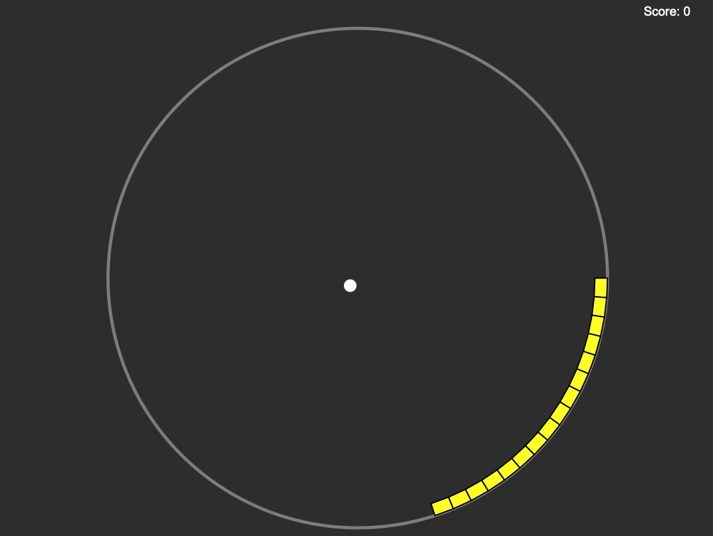
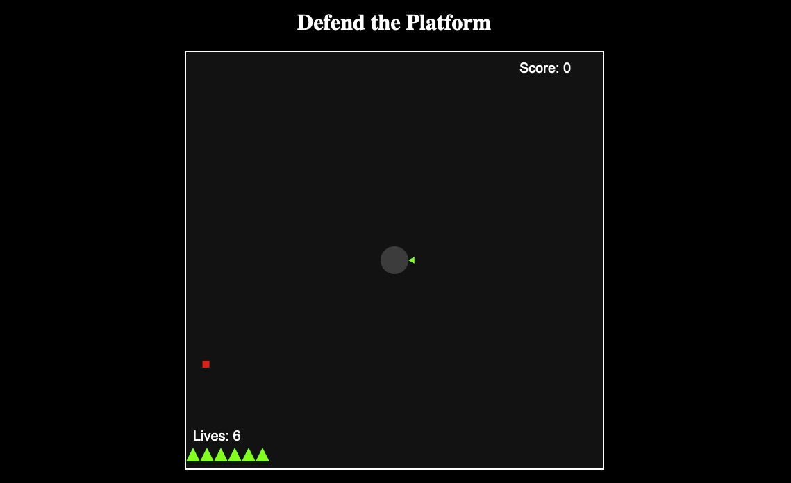

▶️ Play Now
Chain link bounce
Author: Jonathan Roberts
Course: BSc Computer Science
Concept: A circular rink, with bouncing balls. Bounce the balls off the links, before they fail, and you get overwhelmed by balls.
Controls: Left/right arrows to rotate.

▶️ Play Now
Protect the platform
Author: Joanthan Roberts
Course: BSc Computer Science
Concept: A retro-style space shooter. Rotate the gun turret to protect your space station from the space flies.
Controls:Rotate left/right with left/right arrow keys. Move faster with Shift. Space to fire.